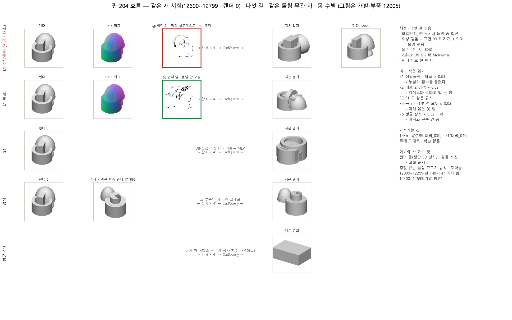
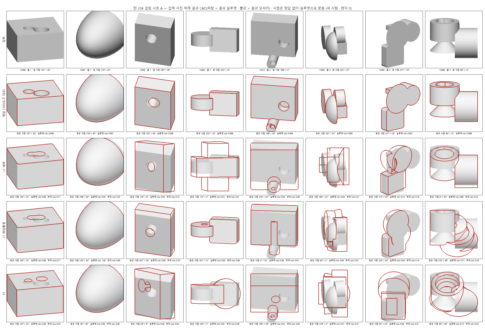
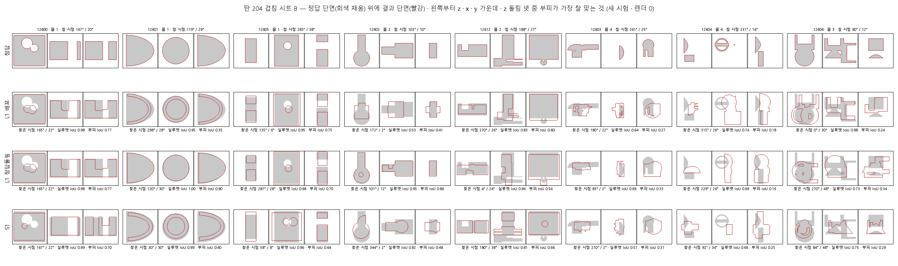

tr204 배포 경로로 다시 재기 — 정답 없이 재면 L1 · S1 은 몇인가 (11-16 · 모델204.py · 손으로 정리)
분석
한 줄로
물음: 감사에서 찾은 누설(입력 z 돌림을 정답 실루엣으로 고름)과 「시험 99 를 모든 결정에 씀」을 빼고, 누구도 본 적 없는 새 시험에서 배포 경로로 재면 L1 · S1 은 몇인가?
답: 새 시험 200 개에서 L1 배포 0.035 · L1 정답돌림 0.045 · S1 0.025 다. 개발 시험의 0.111 · 0.071 보다 훨씬 낮고, 맞힌 것은 몸 1 개 부품이 대부분이다(몸 3 개 이상 139 개는 셋 다 0). 검색 · 평균 상자 대조는 채점이 죽어 못 쟀다. 판정은 「관찰」이다.
왜 이 판을 했나
11-16 전체 감사(claudedocs/감사_이미지CAD_20261116.md)에서 L1 의 입력이 정답 실루엣으로 방향을 받고 있었고, 맞힌 부품은 전부 몸 1 개였고, 시험 99 를 모든 결정에 써 왔다는 것을 확인했다. 그래서 고칠 순서 1 「숫자부터 바로잡기」로, 학습 없이 배포 경로로 다시 쟀다. 우리 목표는 임의의 이미지 → CAD 코드다.
바꾼 것 하나
시험과 재는 길만 바꿨다. 무게(193b · ⑥ 199 · S1 201)는 그대로다.
- 시험: 12600~12799 를 같은 생성기로 새로 뽑음. 12000~12299 는 tr140~147 에서 규칙을 정하는 데 썼고, 12300~12599 는 기말 봉인이라 쓰지 않았다.
- L1 배포: 정답 실루엣으로 돌림을 고르지 않는다(193b 출력 그대로).
- 채점: z 네 돌림 중 최선(돌림 무관) · 몸 수별 · 95 % 구간.
결과

| 길 | 모양 맞음 | 95 % 구간 | 몸 1 | 몸 2 | 몸 3+ |
|---|---|---|---|---|---|
| L1 정답돌림(지금 방식 · 대조) | 0.045 | 0.024~0.083 | 8/22 | 1/39 | 0/139 |
| L1 배포 | 0.035 | 0.017~0.070 | 6/22 | 1/39 | 0/139 |
| S1 | 0.025 | 0.011~0.057 | 5/22 | 0/39 | 0/139 |
| 검색 · 평균 상자 | 못 잼 |
모양 맞음 = 위상(덩어리 · 구멍 수)이 같고 표면 99 % 거리가 5 % 안.


왜 이렇게 나왔나
확인한 것
- 다시 짠 L1 길은 199 의 ⑥ 입력을 화소 100 % 그대로 만든다(개발 99 · 렌더 0 · 1). 배포 · 정답돌림의 차이는 돌림 고르기 하나다.
- 새 시험은 몸 3 개 이상이 70 %(139/200)다. 개발 시험(17 % 가 몸 1 개)보다 어렵다.
- 겹침 시트의 도구 대조: 정답 CAD 를 같은 방법으로 겹치면 실루엣 IoU 0.982~0.999, 찾은 시점이 참과 0~1° 안이다. 그래서 결과 줄의 어긋남은 도구가 아니라 결과 모양 탓이다.
- 8 부품을 칸마다 확대해 본 결과: 맞는 것은 바깥 크기 · 비율, 그리고 정답 돌림을 받은 단순한 몸(12601 돔 부피 IoU 0.90 · 12602 0.86)이다. 구멍 · 홈은 어느 칸도 자리 · 방향 · 관통 여부가 다 맞지 않았다. 몸 3 개 이상은 세 길 다 배치 · 종류가 틀렸다.
- R1(누설 크기)은 평균으로는 0.010 이라 미리 적은 규칙으로 「점수엔 작았다」 지만, 겹침 시트에서는 부품마다 크게 갈린다(12601 0.35 → 0.90 · 12602 0.41 → 0.86).
짐작 (아직 확인 안 함)
- 평균 차이가 작은 것은 대부분 부품을 둘 다 못 맞혀서, 정답 돌림의 도움이 몸 1~2 개 부품에서만 드러나기 때문일 수 있다.
한계
- 검색 · 평균 상자 대조를 못 쟀다(제 실수 — 검색 길에서 일꾼 하나가 죽어 200 개가 다 실패했는데 지켜보지 않았다). 그래서 R2 · R3 · R5 는 못 가렸다.
- 렌더 0 만 쟀다(렌더 1 되풀이 안 함).
- 남은 누설: 렌더 틀이 여전히 정답 3D 상자 가운데 · 크기다(고칠 순서 2).
- 겹침 시트는 8 부품이다. 대칭 부품은 정답 없이 찾은 시점이 하나로 안 정해진다(12605).
배운 것과 다음
정답 없이 배포 경로로 재면 L1 · S1 은 몸 1 개 부품의 바깥 덩어리 정도만 맞힌다.
- 판마다 겹침 시트 A · B(도구 대조 줄 포함)를 표준 확인으로 붙인다.
- 앞단 숫자는 끝단 점수가 아니라 단계별 정답(단면 · 부피 · 닫힌 3면도)으로 잰다.
- 다음 구조는 tr206(단면) 의 D0 천장부터.
제 실수 (이 판)
- 채점 결과에 「거리」 칸이 없는 실패를 처리하지 않아 첫 채점이 L1 배포에서 KeyError 로 죽었다.
- 다시 돌린 채점에서 검색 길이 「다시 200」 을 찍었는데 다른 일을 하며 지켜보지 않았다.
- 막은 함정: 검색 · 평균 상자 칸은 라벨(0 · 1)을 ±9 로짓으로 바꿔 넣었다(사양() 은 시그모이드 ≥ .5 라 라벨 0 이면 빈 칸이 「있음」이 됨).